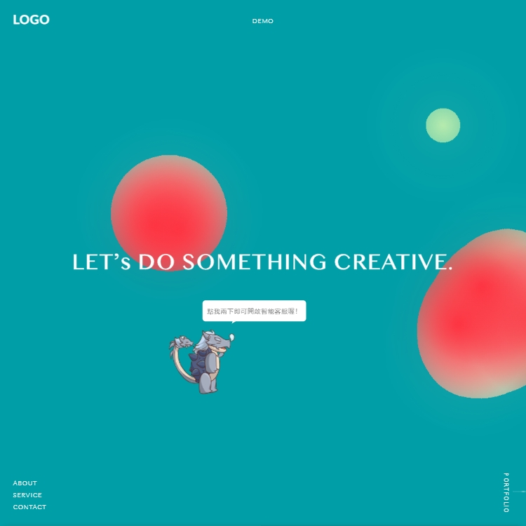
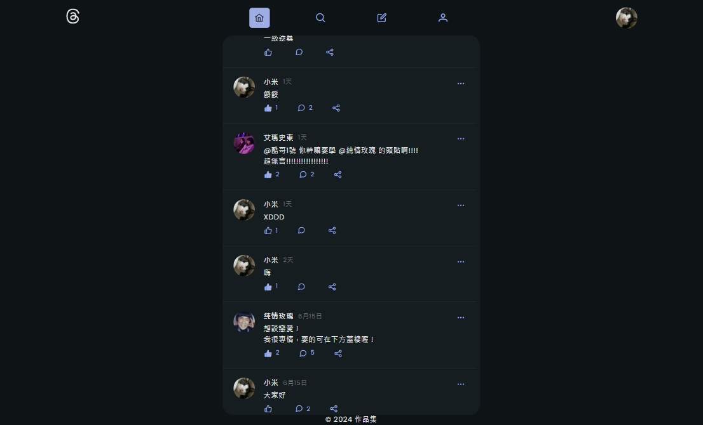
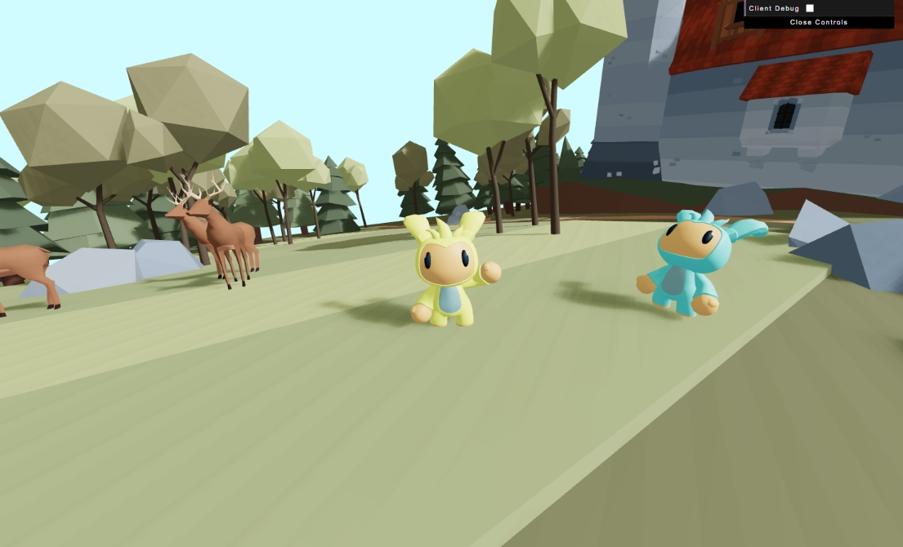
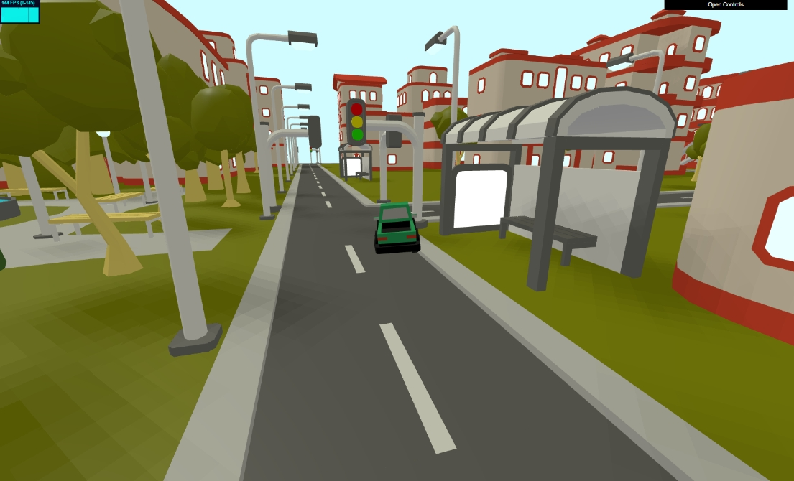
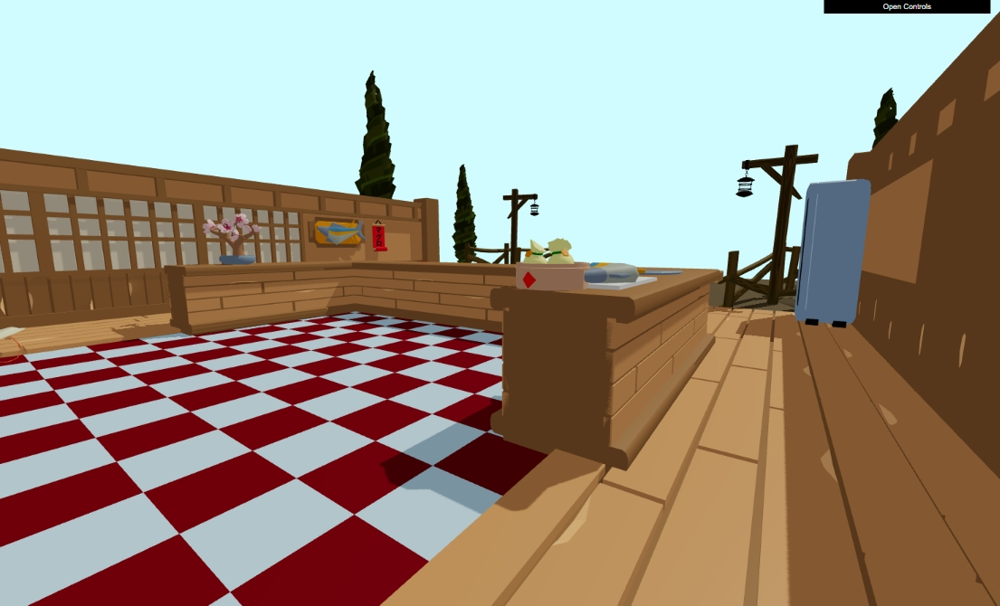
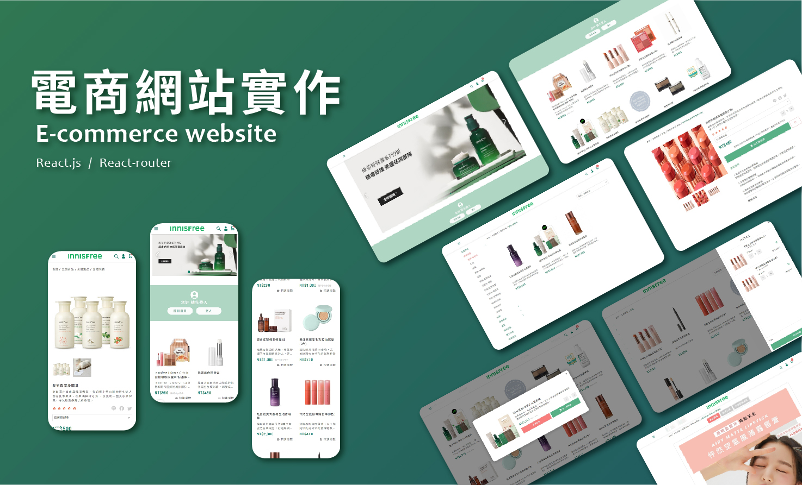
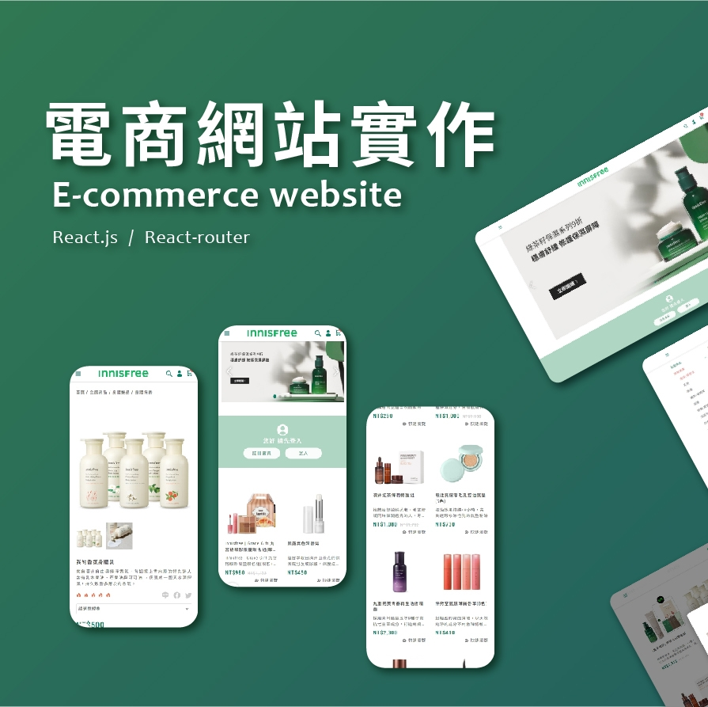

Aboutme
嗨，我是 Alice，擅長 AI 應用整合與快速原型開發的前端工程師。目前在醫療機構負責 AI 系統開發，專注於多 Agent 架構設計、Prompt Engineering 優化與高互動性介面開發。







Skills
AI 整合與應用
多 AI Providers 整合
Vercel AI SDK 串接 OpenAI、Anthropic、Google Gemini、xAI Grok、Groq
Prompt Engineering
多層漸進式 prompt、結構化輸出、Chain-of-Thought 推理
多 Agent 架構
協同工作的 AI Agent 系統（診斷、藥物、檢查）
LLM 應用開發
圖片識別、自然語言處理、流式輸出、助手系統
語音處理技術
Glows.ai 自部署 Fast Whisper 即時語音轉文字
安全沙箱環境
類 Claude Artifact 即時代碼預覽功能
前端框架與核心技術
前端框架
Next.js 15 (App Router)、React 19、TypeScript 5
核心技術
ES6+、HTML5、CSS3、Sass/SCSS
狀態管理
Zustand、TanStack Query（含 prefetch/hydration 優化）
響應式設計
RWD、SEO 優化
高互動性開發
3D 與遊戲開發
Three.js、WebGL、Phaser.js、Rapier.js 物理引擎
動畫與視覺效果
GSAP、Canvas、WebGL Shader
即時互動
WebSocket 多人連線、拖拽功能（@dnd-kit）、語音活動檢測（VAD）
效能優化
Web Worker 多線程、虛擬列表、懶加載
UI/UX 設計與元件開發
設計系統建立
從零建立團隊 UI 元件庫，基於 Shadcn UI 客製化
元件文件化
Storybook 8 元件展示與文件
UI 框架
Radix UI、Tailwind CSS 4
無設計資源開發
獨立完成視覺設計與使用者體驗優化
後端與資料處理
後端技術
Node.js、Express、PostgreSQL、Drizzle ORM
API 與認證
RESTful API / JSON 串接、JWT 認證、NextAuth.js 5
快取與優化
Redis 快取
開發工具與流程
版本控制
Git/GitHub、CI/CD 流程
代碼品質
ESLint、Prettier、TypeScript 嚴格模式
國際化
next-intl、i18next
Experience
員榮醫療社團法人員榮醫院 - 前端開發工程師
AI 醫療應用開發
- 採用快速原型開發，兩週完成 SOAP 醫囑系統 MVP 版本
- 設計多 Agent 協作架構（診斷、藥物、檢查），實現四層漸進式 ICD-10 診斷系統
- 整合 Glows.ai 自部署 Fast Whisper 實現即時語音轉病歷，使用 Streaming UI 提供即時 AI 回饋體驗
- 開發 AI 聊天應用，整合自訂助手系統與院內資料庫連線，成功獲得醫師認可並在院務會議推廣
- 實現類 Claude Artifact 即時代碼預覽功能，建立安全沙箱環境執行 React/HTML/JS
慢箋管理助手
- LLM 識別去識別化慢箋圖片，自動配對院內資料庫並建立任務流程
專案管理平台 UI/UX 重建
- 接手類似 Linear 的專案管理平台，負責完整 UI/UX 重新設計
UI 元件庫建立與設計系統
- 獨立建立團隊共用 UI 元件庫，基於 Shadcn UI 客製化並部署 Storybook
系統優化與效能改善
- 結合 TanStack Query prefetch 與 hydration 策略，顯著提升頁面載入速度
- 優化醫療系統介面，在保守的醫院環境中成功推廣新技術應用，獲得實際使用者認可
專案維護
- Maintainer（ui、chat、soap-system、deep-anes-patient、vita-sdk）
- Developer（frontend-mdos、surgical-system）
跳跳股份有限公司 - 前端工程師
高互動性開發
- 開發高互動性網頁遊戲與 3D 場景應用
- 使用 Three.js、Canvas、Phaser.js 實現視覺特效
- 研究物理引擎（Rapier.js）與 WebSocket 多人連線技術
專案開發與品質保證
- 獨立設計並完成多個創意專案，展現技術與設計能力
- 進行跨瀏覽器測試，確保產品相容性
揚京快客網路科技公司 - 專案規劃
專案管理
- 規劃上百間網站架構，累積豐富專案管理經驗
- 與設計師、工程師及客戶溝通協調，確保專案順利進行
流程優化
- 優化使用者驗收流程，協助工程師提升修整速度 30-40%
- 蒐集並分析 UI/UX 資料，協助改善產品設計
Portfolio
門診醫囑系統
SOAP 醫囑系統、多 Agent 架構、四層漸進式診斷
- 多 Agent 協作架構（診斷、藥物、檢查）
- 四層漸進式 ICD-10 診斷系統
- Glows.ai Fast Whisper 語音轉文字
- Streaming UI 即時 AI 回饋體驗
技術亮點
開發時程：2 週完成 MVP 創新設計：多 Agent 架構採用快速原型開發方式，在兩週內完成 SOAP 醫囑系統 MVP 版本。設計多 Agent 協作架構，包含診斷、藥物、檢查三個主要 Agent，實現四層漸進式 ICD-10 診斷系統提升診斷準確度。整合 Glows.ai 自部署 Fast Whisper 實現即時語音轉病歷，使用 Streaming UI 提供即時 AI 回饋體驗。
MDOS AI 聊天應用
Vercel AI SDK 4、助手系統、Artifact 功能、慢箋管理助手
- AI 聊天應用：整合自訂助手與院內資料庫連線
- Artifact 功能：類 Claude 即時代碼預覽，安全沙箱環境
- 慢箋管理助手：LLM 圖片識別，自動配對資料庫建立任務
- TanStack Query prefetch + hydration 優化
專案成果
使用人數：20+ 位醫護人員 成功推廣：獲得醫師認可並在院務會議推廣 實際應用：慢箋管理助手協助部門建立自動化流程開發 AI 聊天應用整合自訂助手系統與院內資料庫連線，獲得醫師認可並在院務會議推廣，實際使用人數達 20+ 位醫護人員。實現類 Claude Artifact 即時代碼預覽功能，建立安全沙箱環境執行 React/HTML/JS，包含 Babel 即時轉譯與 Proxy API 存取控制。實現慢箋管理助手，透過 LLM 識別去識別化慢箋圖片並自動配對院內資料庫建立任務流程，協助部門建立自動化工作流程。
UI 元件庫與專案管理平台
Shadcn UI 客製化、Storybook 文件化、Linear 風格 UI/UX 重建
- UI 元件庫：基於 Shadcn UI 客製化，Storybook 文件化
- 設計系統：在無專職設計師情況下獨立建立
- 團隊協作：提升開發效率與視覺一致性
專案成果
技術創新：TanStack Query prefetch + hydration 優化 設計能力：獨立完成視覺設計與使用者體驗優化負責完整 UI/UX 重新設計，結合 TanStack Query prefetch 與 hydration 策略顯著提升載入速度。獨立建立團隊 UI 元件庫，基於 Shadcn UI 客製化並部署 Storybook 文件化平台，在無專職設計師情況下展現完整的設計與開發能力。
Introduction
嗨！我是亭予！
在成為前端工程師之前，我曾是專案規劃，擁有上百間網站規劃經驗。這段經歷讓我能夠捉住程式盲點、快速解決問題，並培養了與工程師有效溝通的能力。一次偶然機會下，設計師教我通過簡單的代碼改變網站外觀，這激發了我對前端技術的興趣，從此踏上了轉職之旅！
在跳跳公司，我從零開始學習 Canvas 和 Three.js 等視覺技術，製作網頁遊戲讓我接觸到物理引擎、效能優化以及多人連線等技術，這些經驗大大提升了我的創意設計和問題解決能力。
現在在現職公司，我開始嘗試 AI 應用開發，覺得這個領域真的很有趣！我參與開發了多個 AI 系統，包括一個採用多 Agent 架構的 SOAP 醫囑系統，運用快速原型開發方式，在兩週內完成 MVP 並持續優化。嘗試 Prompt Engineering 的過程很好玩，像是設計四層漸進式診斷系統、整合 Glows.ai 自部署 Fast Whisper 實現語音轉文字，每個新嘗試都讓我學到不少東西。
另外，我也開發了 AI 聊天應用，實現類似 Claude Artifact 的即時代碼預覽功能，建立安全沙箱環境執行 React/HTML/JS。在沒有設計師的情況下，我獨立建立了團隊 UI 元件庫，用 Storybook 做元件文件化，讓團隊協作更順暢。
我喜歡快速迭代的開發節奏，享受把想法變成實際產品的過程。從專案規劃到前端工程師，再到現在接觸 AI 應用，每一步都是有趣的學習體驗。我相信 AI 正在改變軟體開發的未來，而我希望能持續學習、成長，和優秀的團隊一起打造令人驚豔的 AI 產品！